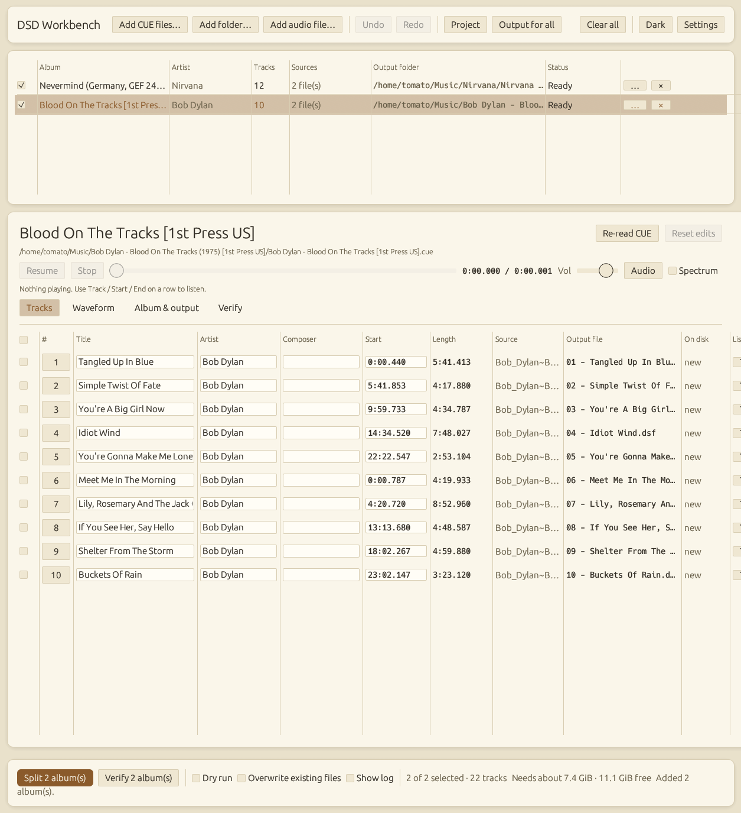
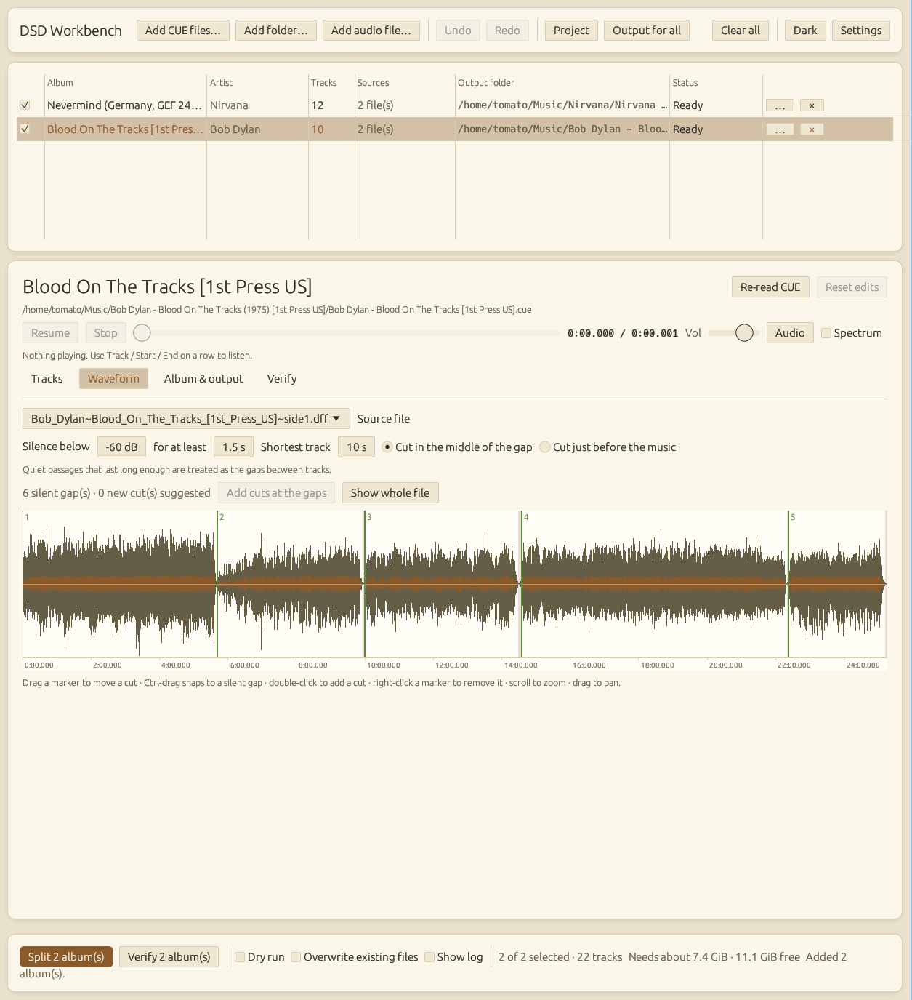
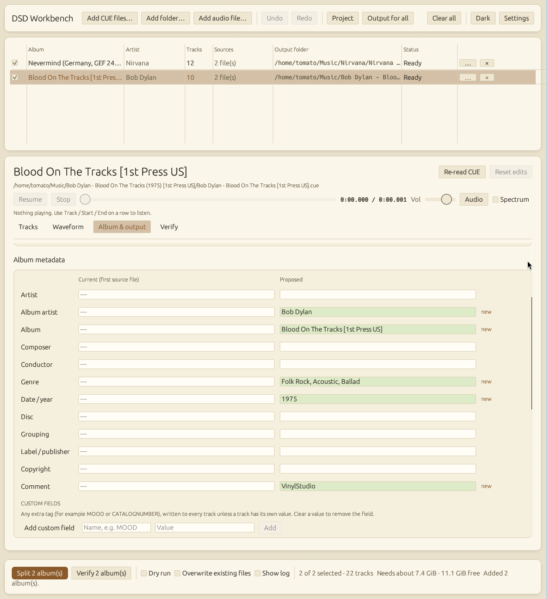

Read
Open a CUE sheet or a bare .dsf/.dff. Headers, tags and cut points are read; nothing is modified.
Open source · Offline · MIT
Split whole-side DSD recordings into tracks without ever decoding the audio, then prove the result is bit-for-bit identical. Tag, verify and look up releases in one workbench.
A DSD side is one long 1-bit stream. Cutting it is a matter of copying the right bits to new files, and then checking that the copy is exact.
Open a CUE sheet or a bare .dsf/.dff. Headers, tags and cut points are read; nothing is modified.
Cuts land on the exact sample, even off a byte boundary. Drag them on a waveform or let silence detection find the gaps.
Each track is a standards-conforming DSF with its own header and ID3 tags, written to a temporary file and moved into place when complete.
Every new file is read back and compared with the source, bit by bit, with a map of any difference and a real exit code.
A batch workspace for whole collections: every album, every track, every tag, and exactly what will change.



An interactive sketch of the waveform editor, drawn from synthetic audio. Click to add a cut, drag a marker to move it, right-click to remove it, or let the gaps find themselves.
DSF and DSDIFF in, DSF out. Any channel count, any DSD rate, multi-file CUE sheets, and batches of whole folders.
Verify re-reads every output and compares it with the source, finds shifted-but-correct files and checks tags and cover art.
Detect the silent gaps automatically or cut by hand on a zoomable waveform, then export the result as a CUE sheet.
Album defaults, per-track overrides, bulk edits, 14 standard fields plus custom ones, cover art, and a tag-only mode for files you already have.
Templates such as {track:02} - {title} and {albumartist}/{album} ({year}), safe on Windows, macOS and Linux.
Fill titles and details from MusicBrainz or Discogs, in a build you opt into. The default build contains no network code at all.
Prebuilt binaries for Windows, macOS and Linux will come with the first release. Until then it builds with one command.
# Rust 1.88 or newer $ git clone https://github.com/malkhuzanie/dsd-workbench $ cd dsd-workbench $ cargo run -p dsd-workbench --release